Competencias de la unidad
-
Conocer e identificar los periféricos de entrada y salida de la PC.
Expectativa de logro
-
Establecen diferencias entre la memoria RAM y ROM.
-
Enlistan los tipos de cases que existen en el mercado.
-
Conocen los tipos de monitores.
-
Describen los problemas y soluciones provocados por una fuente de alimentación.
-
Identifican los tipos de discos duros.
Elementos de competencia
-
Enumera los componentes de la PC que pertenecen a los periféricos de entrada.
-
Enlista los componentes de la PC que pertenecen a los periféricos de salida.
Contenidos
-
Perifericos de Salida
-
Perifericos de entrada
Memoria RAM
Un aspecto importante por mencionar es que, a la Memoria RAM, también se le llama Memoria Principal, esta almacena de manera temporal los programas en ejecución, los datos con que operan y se puede transferir información rápidamente entre un registro del microprocesador y localizaciones del almacenamiento principal.
La memoria RAM es de tipo aleatorio porque se puede acceder a cualquier byte de memoria sin acceder a los bytes anteriores. Sin duda alguna, la memoria RAM es la más común en los ordenadores de escritorio, portátiles, tablets, etc.
La capacidad de la memoria se mide en MB o GB, que indica la cantidad de datos que se puede almacenar para ser procesados por el procesador central. Cuanta más memoria RAM tenga nuestra PC más servicios o programas puede tener arrancados en un mismo momento sin que el rendimiento se vea afectado.
DIMM SDRAM
Un aspecto importante por mencionar es que, a la Memoria RAM, también se le llama Memoria Principal, esta almacena de manera temporal los programas en ejecución, los datos con que operan y se puede transferir información rápidamente entre un registro del microprocesador y localizaciones del almacenamiento principal.
La memoria RAM es de tipo aleatorio porque se puede acceder a cualquier byte de memoria sin acceder a los bytes anteriores. Sin duda alguna, la memoria RAM es la más común en los ordenadores de escritorio, portátiles, tablets, etc.
DIMM DDR
La sigla DDR, significa Double Data Rate y hace referencia a una lectura doble de datos. A diferencia de la tecnología DIMM que procesa un dato por ciclo de reloj, los módulos DDR trabajan al doble de velocidad en el bus del sistema, permitiendo así que las computadoras tuvieran un mayor rendimiento. Los módulos DDR solamente tienen una ranura de posición (Muesca), posee 284 pines y trabaja con 2.5V. A estos módulos se le conocía como DDR200, DDR266, DDR333, DDR 400, DDR 500, DDR600 y DDR800, y corrian a una velocidad de reloj de 100, 133, 166, 200, 233, 250, 300 y 400 MHz.
Partes de una Memoria RAM

Memoria ROM
Es un tipo de memoria que puede almacenar datos de manera permanente o semi permanente. Es conocida como de sólo lectura porque es imposible o muy difícil escribir en ella. La ROM también se conoce como Memoria No Volátil, porque cualquier dato almacenado en ella permanece ahí, aunque se interrumpa el suministro eléctrico. De igual forma, la ROM es ideal para contener las instrucciones de inicio de la PC; es decir, el software que hace arrancar al sistema.
Una porción del espacio de direccionamiento de la RAM está asignada (mapeado) a uno o más chips ROM con el fin de contener el software que permite a la PC arrancar, de otra manera, el procesador no tendría ningún programa en memoria para ejecutar durante el proceso de inicio.
Usos de la Memoria ROM
-
La BIOS, programa que permite controlar las principales interfaces de entrada-salida.
-
Bootstrap, se refiere al programa que arranca el sistema operativo como BCD o NTLDR utilizado en los sistemas operativos Windows o Lilo utilizado en sistemas operativos GNU/Linux. También es llamado Boot loader (Cargador de inicio).
-
La configuración CMOS, una pantalla que se visualiza al iniciarse el ordenador. Se utiliza para modificar los parámetros del sistema (a menudo erróneamente llamada BIOS). La información contenida en esta RAM-CMOS es usada por el BIOS durante el arranque del ordenador para establecer la configuración del sistema. En ese momento se comprueba la integridad del contenido del CMOS y, si los datos son incorrectos, se genera un error y el sistema solicita una respuesta al usuario sobre la acción a seguir: continuar o entrar a la utilidad de configuración.
-
POST (power-on self-test o autoprueba de arranque), programa que se ejecuta automáticamente cuando arranca el sistema, lo que permite configurar y diagnosticar el estado del hardware.
tipos de Rom
Las memorias ROM han evolucionado gradualmente desde memorias fijas de sólo lectura hasta convertirse en memorias que pueden programarse y reprogramarse.
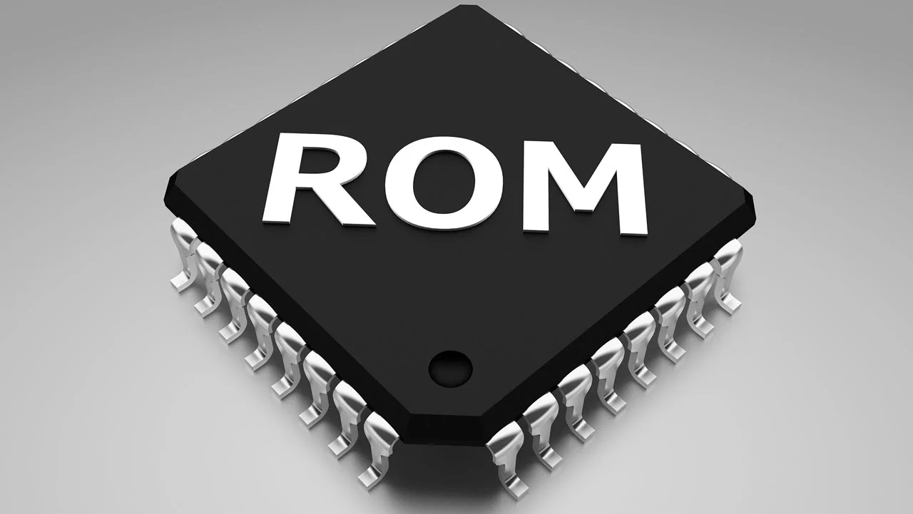
ROM
Las primeras memorias ROM se fabricaron utilizando un procedimiento que escribe directamente la información binaria en una placa de silicona mediante una máscara. Cabe resaltar que, este procedimiento hoy en día es obsoleto.
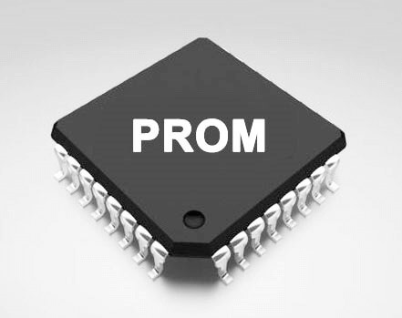
PROM
Las memorias PROM (Programmable Read Only Memory, memoria programable de sólo lectura), fueron desarrolladas a fines de la década de los 70, el procedimiento para grabar datos en el chip se realizaba mediante la aplicación de una sobrecarga de tensión, entre los 12 y los 20 voltios, a los diodos en el circuito integrado, a través de un aparato conocido como "Programador ROM". Los fusibles quemados corresponden a 0 y los demás a 1.
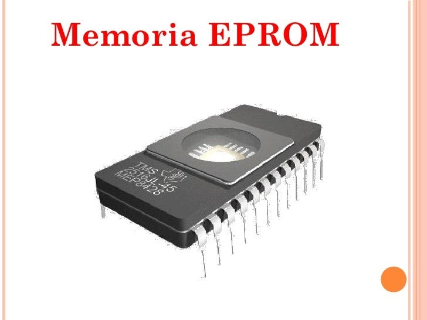
EPROM
son memorias PROM que se pueden eliminar. Estos chips disponen de un panel de vidrio que deja entrar los rayos ultravioleta. Cuando el chip es sometido a rayos ultravioleta de una determinada longitud de onda, se reconstituyen los fusibles, lo que implica que todos los bits de memoria vuelven a 1. Por esta razón, este tipo de PROM se denomina borrable.
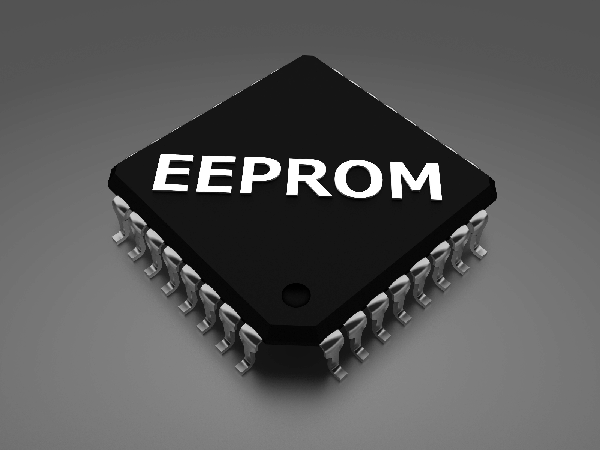
EEPROM
Las memorias EEPROM (Electrically Erasable Programmable Read Only Memory, memoria programable de sólo lectura borrable eléctricamente) también son memorias PROM borrables, pero a diferencia de estas, se pueden borrar mediante una sencilla corriente eléctrica, es decir, incluso si se encuentran en posición en el ordenador.
El CASE
Es una estructura de metálica o plástica dónde se ensambla la placa madre y los diferentes componentes de ella como (tarjetas de sonido, video, televisión, etc.)
Comúnmente, el case es conocido con los siguientes nombres caja, carcasa, chasis, gabinete o torre de computadora.
Tipos de case
-
La tecnologia que almacenaran (Torre, desktop, laptop, gabinete integrado a la pantalla "Computadoras todo en uno", etc.)
-
Uso (Gabinetes convencionales, gabinetes para oficina, gabinetes gamers).
La elección de un gabinete al comprar una computadora influye en el costo al momento de comprar una computadora.
Partes de un case
-
Bahías: Son cavidades en las que se alojan las unidades de almacenamiento como: disco duro, lectoras CD-ROM, DVD, Blu ray, etc.
-
Power switch: Botón encargado de encender y apagar la fuente de poder para suministrar energia a todos los componentes del sistema (internos y externos). Para un case AT este botón se presenta como un interruptor on/off, y para un case ATX este se presenta como un pulsador para el encendido y se apaga mediante el software.
-
Reset: Este botón se utiliza para reiniciar el equipo sin tener que suspender el sistema (manualmente se usa Ctri Alt Supr)
-
Leds indicadores (Diodo emisor de luz): Se encarga de representar la actividad de un determinado dispositivo como puede ser el HDD (disco duro) representado por el color rojo.
-
Speaker interno: Se encarga de emitir señales audibles al momento del encendido o cuando se presenta algún error, por ejemplo, si la tarjeta de video no funciona, el speaker emite una serie de pitidos.
Memoria Flash
En el campo de las memorias reprogramables para microcontroladores, son el último avance tecnológico en uso a gran escala, y han sustituido a los microcontroladores con memoria EEPROM. Almacenan mayor cantidad de información a un menor costo.
Problemas de memoria
El BIOS de todas las tarjetas madre tiene una prueba de memoria en la POST que se ejecuta cada vez que enciende el sistema. En la mayoría de los casos, también recibe un disco de utilerías junto con su equipo. En el mercado existen otros programas comerciales, y casi todos incluyen pruebas de memoria.
Cuando la POST se ejecuta, no sólo prueba la memoria, sino que también la cuenta. El conteo es comparado con el realizado la última vez que el programa de configuración del BIOS fue activado; si es diferente, se despliega un mensaje de error. A medida que la POST corre, escribe un patrón de datos a todas las locaciones de memoria del sistema y lo lee
Periféricos de Salida
Monitor
Es uno de los principales dispositivos electrónicos de salida de la computadora, en este se muestran las imágenes y textos generados por medio de un adaptador gráfico o de video.
En cualquiera de estas tecnologías, la imagen mostrada consta de pixeles (pequeños puntos o elementos de imagen). La resolución de un monitor se refiere a la cantidad de pixeles que se muestran en un determinado espacio. A mayor resolución, más amplitud tendrá el monitor.
Los monitores pueden clasificarse de distintas formas, por ejemplo: de acuerdo a la tecnología empleada (CRT, LCD, PDP, etc.), de acuerdo a los colores usados (monocromático y policromático), de acuerdo al uso (monitor no táctil, pantalla táctil, pantalla multi táctil), etc.
Cuando escuchamos hablar de HD, Full HD, QHD, UHD, 4K, 8k, estamos haciendo referencia a la resolución que ofrece una pantalla.
Problemas de impresion
Por lo regular, los problemas de impresión son resultado de los suministros, como el tóner o el papel. Si el cartucho de tóner está casi vacío o si algo de tóner suelto se incrusta en los componentes internos de la impresora, la calidad de la salida impresa puede degradarse de varías maneras del mismo modo, el papel húmedo, doblado, arrugado o insertado en la bandeja en forma incorrecta, puede causar muchos problemas.
- Impresión borrosa: En una impresora láser, los caracteres borrosos son resultado, probablemente, del uso de papel ligeramente húmedo. En una impresora de inyección de tinta, los caracteres borrosos o manchados pueden ser resultado de utilizar varios tipos de papel inapropiados para este tipo de impresión. Esto también puede ocurrir si hay un problema con la conexión entre el cartucho de impresión y el soporte, intente reinstalar el cartucho de impresión.
- Densidad de impresión variable: Si descubre que algunas áreas de la página están más oscuras que otras al usar una impresora láser, es probable que el problema se deba a la distribución del tóner sobre el fotorreceptor. La causa más común de esto es una distribución desigual del tóner al agotarse su contenedor. Retirar el cartucho del tóner y agitarlo de un lado a otro redistribuye el tóner y hace que fluya uniformemente. También puede usar esta técnica para obtener unas cuantas páginas más, después que la impresora haya registrado el error tóner bajo.
- Si una impresora produce en forma consistente páginas con la misma densidad variada de impresión, el problema podria ser la ubicación de la impresora: si la unidad no descansa sobre una superficie nivelada, el tóner puede pasar sobre una superficie nivelada, el tóner puede pasar hacia un extremo del cartucho, afectando su distribución sobre la página. También es posible que su impresora tenga una fuga de luz que provoque que un área del fotorreceptor se exponga a más luz ambiental que otras partes. En ocasiones, alejar la impresora de una fuente de luz brillante puede solucionar este problema.
- Corotrones sucios o dañados. Los corotrones de una impresora láser (Alambres corona) aplican cargas electrostáticas al fotorreceptor y al papel. Si el corotrón de transferencia el cual carga el papel tiene residuos de tóner o fragmentos de papel sobre él, puede aplicar una carga desigual y esto se traducirá en líneas blancas difusas o borrosas que corren en forma vertical sobre sus páginas impresas. Las páginas todas en negro o en blanco pueden ser causadas por un cargador o un corotrón de transferencia rotos respectivamente. Por lo regular, un cartucho de toner que contiene el tambor fotorreceptor también incluye el corotrón de carga, de modo que reemplazar el cartucho puede remediar algunos de estos problemas.
Sistema continuo de tinta
Es un sistema de mangueras por el cual podemos se inyectar tinta de manera continua a los cartuchos para no tener que cambiar ni rellenarlos manualmente.
Ventajas
-
Bajo costo de la tinta en comparación con la sustitución de los cartuchos
-
Se puede recargar varias veces mientras el cabezal no se dañe.
Desventajas
-
De la misma manera que con los cartuchos de tinta genéricos, la garantía de la impresora se pierde de parte del fabricante o proveedor de la misma.
-
En ocasiones, pueden presentarse obstrucciones dentro de las mangueras de alimentación.
-
Posible obstrucción de los cabezales de impresión si no se utilizan con regularidad (mínimo tres o cuatro veces por semana).
-
No todos los modelos y marcas de impresoras permiten su instalación.
-
Al mover la impresora de lugar, o estar manipulando continuamente los depósitos de tinta, es posible que ingrese aire en las mangueras, y esto obstruye el sistema.
-
Dependiendo del modelo y la tinta que se utilice, la calidad de la impresión puede bajar.
Fuente de Alimentación (Fuente de Poder)
Es el dispositivo que convierte la Corriente alterna (CA) en una o varias Corrientes continuas (CC), y es la encargada de alimentar al ordenador. A la fuente de alimentación entran 125v o 220v en tensión alterna y salen hacia el ordenador transformados en 12v, 5v y 3.3v en tensión continua.
La fuente de alimentación tiene salidas tanto para la Placa Base (normalmente una salida con 20+4 pines y otra de 4 o 6 pines) para los diferentes elementos que necesitan alimentación directa como lo son: Discos duros, disqueteras, unidades ópticas e incluso en algunos casos alimentación.
750W

Funciones de las fuentes
-
Transformación: Reduce la tensión de entrada a la fuente (220 v o 125 v) de la red eléctrica a 5 o 12 voltios. La conversión la realiza un transformador en bobina, provocando una salida de entre 5 a 12 voltios.
-
Rectificación: Tiene el objetivo de asegurar que no se produzcan oscilaciones de voltaje en el tiempo. Se intenta con esta fase pasar de corriente alterna a corriente continua a través de un componente que se llama puente rectificador o de Graetz. Esto permite que el voltaje no baje de 0 voltios, y siempre se mantenga por encima de esta cifra
-
Filtrado: En esta fase se aplana al máximo la señal, eso se consigue con uno o varios condensadores, que retienen la corriente y la dejan pasar lentamente, con lo que se logra el efecto deseado.
-
Estabilización: Busca mantener una señal continua estable.
Tipos de Conectores
Los conectores de la fuente de poder se utilizan para brindar energía a los diferentes accesorios que se le pueden agregar a la computadora; así como a la tarjeta madre.
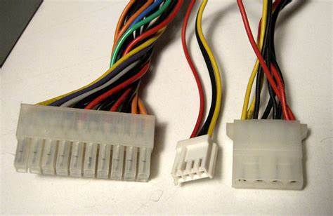
Conectores tipo Molex
Durante mucho tiempo este conector fue el más usado para alimentar las unidades de CD, D Duros (IDE), ventiladores, iluminación, etc. Es importante mencionar que, saca dos voltajes a 5 siendo capaz de transportar 13 amperios.
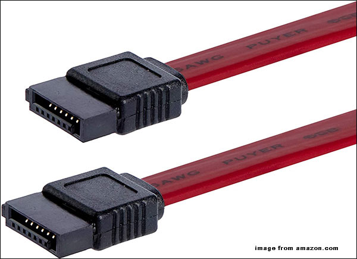
Sata
Es un conector que se utiliza para brindar energía a los discos duros SATA, DVD SATA, etc.
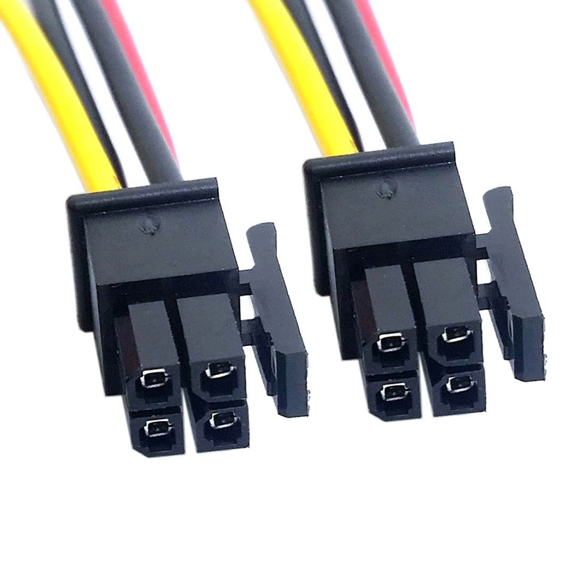
Conector ATX de 4 pines
Este conector se conecta a la tarjeta madre para brindar energía a la CPU (Unidad central de procesamiento). Los cables están codificados con color negro para las líneas de señal COM y amarillo para las líneas de 12 voltios.
Conector EPS de 8 pines
Tiene las mismas funciones que el conector ATX de 4 pines, pero pensado para estaciones de trabajo que en placa tienen más de un procesador y por tanto necesitan una cantidad adicional de canales a 12V.
Conector de 20 pines para la tarjeta madre
Es un conector que se utiliza para alimentar una tarjeta madre ATX de 20 pines, incluye corrientes de 5v y 3.3v para alimentar a los diferentes componentes de la placa directamente con el voltaje necesario.
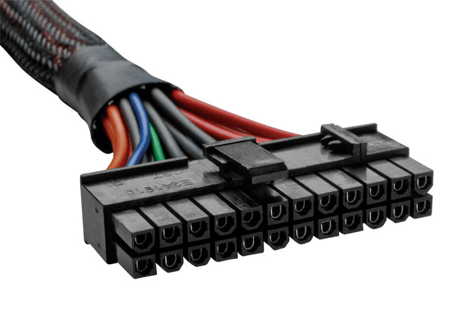
Conector de 24 y 20 pines
Igual que el conector de 20 pines este también se utiliza para alimentar la placa base; la necesidad de aumentar la cantidad de corriente en la placa base para poder alimentar los conectores PCI Express ha hecho que se les aumente 4 pines más.
Dico duro
Es un dispositivo encargado de almacenar información de forma permanente en una computadora tal como: archivos, documentos, fotos, música, diseños, etc.
Un disco duro se mide en capacidad de revoluciones y capacidad de almacenamiento. Las revoluciones de un disco duro son movimientos que tiene el disco magnético, significa que entre mayor movimiento tiene el disco magnético será más rápida la lectura de información.
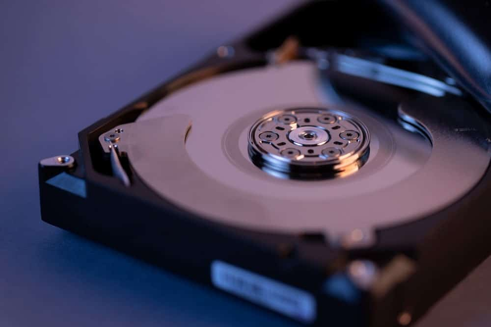
Tipos de discos duros
HDD (Hard disk drive)
A este tipo de discos duros también se le llama mecánicos y emplean un sistema de grabación magnética para almacenar archivos digitales. Están compuestos de piezas mecánicas y se compone de uno o varios discos rigidos unidos por un mismo eje y que giran a gran velocidad dentro de una caja metálica. En cada plato y en cada una de sus caras, un cabezal de lectura/escritura lee o graba los datos sobre los discos.
Para comunicarse con la computadora los discos duros utilizan un controlador que emplea una interfaz estándar y estos pueden ser:
-
Serial ATA O SATA.
-
IDE o denominados también ATA O PATA.
-
SCSI que son utilizados en servidores.
SDD (Solid state Drive)
Es un tipo de dispositivo de almacenamiento de datos que utiliza memoria no volátil, como la memoria flash, para almacenar datos.
No tienen cabezales físicos para grabar los datos, en su lugar incluyen un procesador integrado para realizar operaciones relacionadas con la lectura y escritura de datos.
Estos procesadores, llamados controladores, son los que toman las "decisiones" sobre cómo almacenar, recuperar, almacenar en caché y limpiar los datos del disco, y su eficiencia es uno de los factores que determinan la velocidad total de la unidad. Además, al no depender del giro de un componente físico, también se logra una unidad más silenciosa que los discos mecánicos.
Una SDD se compone
-
Controladora: Es un procesador electrónico que se encarga de administrar, gestionar y unir los módulos de memoria NAND con los conectores en entrada y salida. Ejecuta software a nivel de firmware y es con toda seguridad, el factor más determinante para las velocidades del dispositivo.
-
Caché: Un SSD utiliza un pequeño dispositivo de memoria DRAM similar al caché de los discos duros. El directorio de la colocación de bloques y el desgaste de nivelación de datos también se mantiene en la memoria caché mientras la unidad está operativa.
-
Condensador: Es necesario para mantener la integridad de los datos de la memoria caché, si la alimentación eléctrica se ha detenido inesperadamente, el tiempo suficiente para que se puedan enviar los datos retenidos hacia la memoria no volátil.
La capacidad de almacenamiento de un disco duro sólido llega actualmente hasta los 2TB y el precio por TB es más alto que el de un disco duro mecánico. Podemos encontrar disco sólido con conexiones SATA, mSATA, M.2, PCIe SSD, etc.
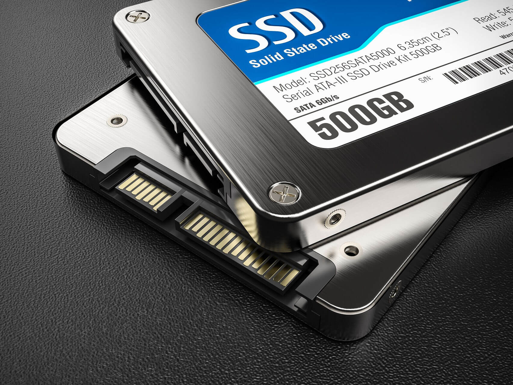
Discos externos
Se utilizan en los ordenadores de sobremesa y en portátiles. Se encuentran preparados en una carcasa adecuada con conexión USB. Pueden ser de 3.5cm o de 2.5cm. Los discos de 2.5cm se alimentan directamente del cable USB y los de 3.5cm consumen más electricidad y necesitan alimentarse mediante un transformador externo, enchufándolos a la alimentación internamente, estos pueden ser SATA O IDE

Dispositivos de Almacenamiento Óptico
Es una unidad electro-mecánica que puede guardar (escribir) y recuperar (leer) la información en un medio de disco especial con una luz láser.
Las unidades ópticas están diseñadas para trabajar con varios tipos de medios: CD (Compact Disc), DVD (Disco Versátil Digital o disco de video digital) y los discos Blu-ray.

CD-R, CD-RW, DVD-R, DVD-RW, Blu-ray
Es un disco de sólo lectura de memoria óptica que puede escribirse solamente una vez. También existe CD-RW (o "re-escribible") se puede escribir varias veces, de forma similar a una memoria USB.
La capacidad de almacenamiento estándar de CD es de aproximadamente 700 MB, en un DVD normal de una cara una capa se puede almacenar 4,7 GB, en un DVD de una cara doble capa puede almacenar hasta 8.5 GB, en un DVD de doble cara una capa se puede almacenar hasta 9.4 GB y en un Blu-ray se puede almacenar hasta 25 GB por capa.
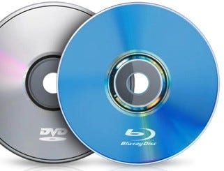
Verificación de las Condiciones de Trabajo
El mantenimiento preventivo busca proteger el hardware y la alta inversión económica que representa este para la empresa: razón por la cual es importante que el ambiente dónde esté operando el equipo sea adecuado; por lo tanto, tomar en cuenta las siguientes condiciones:
-
El equipo debe estar libre de la contaminación aeróbica como el polvo y el humo del cigarro,

-
No se debe colocar frente a una ventana exponiéndose directamente a la luz del sol.
-
La temperatura debe ser controlada y constante como sea posible para evitar el stress térmico de los componentes, utilizando para tal propósito aire acondicionado:
-
Se requiere que el equipo de aire acondicionado para el centro de cómputo sea independiente por las características especiales como el ciclo de enfriamiento que deberá trabajar día y noche.
-
La alimentación eléctrica para este equipo debe ser independiente por los arranques de sus compresores.
-
La determinación de la capacidad del equipo necesario debe estar a cargo de personal competente o técnicos de alguna empresa especializada en aire acondicionado, los que efectuarán el balance térmico correspondiente.
-
No deben usarse equipos de aire acondicionado de ventana que no regulen la humedad ni filtren el aire, porque los gases de la combustión de motores y polvo son aspirado y enviado al centro de cómput
-
En la parte eléctrica es conveniente tomar en cuenta las siguientes recomendaciones:
-
La alimentación de la línea debe ser a través de la salida correcta.
-
La salida vertical menor del contacto debe corresponder con el polo positivo.
-
La salida vertical mayor del contacto debe corresponder con el neutro.
-
La salida circular debe corresponder con la tierra.
-
Se debe contar preferentemente con un UPS (Sistema de Poder Ininterrumpido), un regulador y un supresor de picos.
-
La mayoría de los UPS cuentan con estas últimas características. La potencia mínima de salida debe ser de al menos 1000 watts (Cuatrocientos watts del CPU y 200 watts del monitor CRT o 100 watts o menos si es de pantalla plana).
-
Se debe verificar con un multimetro que el voltaje sea el adecuado para que el equipo trabaje adecuadamente. El voltaje debe estar entre los 110 voltios y los 120 voltios sin variaciones.
Procedimientos Necesarios para la Instalación
Para realizar el traslado del equipo de una ubicación a otra es necesario realizar las siguientes instrucciones:
-
Nunca mover el equipo cuando esté prendido, hay que asegurarse antes de moveria de que esté apagado, desconectado de la corriente eléctrica y por supuesto, desconectados todos los componentes como: el ratón, teclado, monitor, impresora, etc.
-
Ejecutar el procedimiento de mantenimiento preventivo del equipo antes de moverlo ya que si el equipo tiene demasiado polvo acumulado, y este se mueve, puede hacer que el polvo caiga en los circuitos de la tarjeta madre ocasionando daños permanentes.
-
Ejecutar el procedimiento de asignación de identificación de equipos descrito de acuerdo a la nueva ubicación del equipo. Actualice el grupo de trabajo, nombre del usuario, nombre del equipo y direcciones IP.
-
Instalar el software especificado en el listado de aplicaciones comunes de acuerdo al departamento y empresa dónde se esté realizando el movimiento del equipo.
Para la instalación de un equipo nuevo, realizar las siguientes instrucciones:
-
Ejecutar el procedimiento de verificación de condiciones de trabajo del equipo de cómputo.
-
Ejecutar el procedimiento de identificación de equipo.
-
Instalar el software especificado en el listado de aplicaciones comunes de acuerdo al departamento y empresa.
-
Instalar impresoras.
-
Ejecutar el procedimiento de clonación de ser necesario.
Procedimientos de Verificación del Equipo,
Procedimiento de verificación del equipo
Cuando es solicitado un mantenimiento preventivo o correctivo, este debe ejecutarse tomando en cuenta los siguientes pasos:
-
Verificar que la computadora esté en el sitio, es decir, junto con el dueño del equipo o al momento en que es traída al centro de cómputo.
-
Llenar la siguiente información en una lista de verificación de equipo:
-
Tarjeta de video
- Tarjeta de sonido
- Unidad de CDROM, DVROM, etc.
- Unidades de Disco o de USB
- Tarjeta de red (Alámbrica o inalámbrica)
-
A continuación, debe encenderse el equipo; en caso de que no hacerlo, abrir la CPU y corroborar que exista lo siguiente:
- Tarjeta madre
- Disco duro
- Memoria RAM
- Tarjeta de video
- Otros componentes internos
Procedimiento de seguridad física
- Mantener el área de trabajo limpia.
- Mantener la herramienta ordenada y en su lugar correspondiente.
- Verificar que lo cables de alimentación estén bien y que no tengan roturas.
- Usar pulsera antiestática, conectada a tierra fisica.
- No debe usar guantes de látex.
- No debe de haber alfombra en el área de mantenimiento.
- No debe de haber alfombra en el área de mantenimiento.
- Usar cubre bocas cuando se haga el sopleteo y aspiración del equipo, también use cubre bocas cuando manipule alcohol isopropilico.
- Usar bata blanca cuando haga la limpieza del equipo.
- . Evite tocar, en la medida de lo posible, las áreas plateadas o doradas de los componentes de las
tarjetas.
Procedimiento de seguridad lógica
-
Verificar que el equipo encienda, en caso contrario, ejecutar el procedimiento de mantenimiento correctivo.
-
Anotar la información de controladores de las tarjetas:
- Video
- Sonido
- Otros
-
Anotar la información de la tarjeta de red IP, compuerta de salida y DNS primario y secundario.
-
Anotar la información del nombre del equipo y grupo de trabajo.
-
Anotar la información de impresoras, nombre y controlador y solicitarlo al área correspondiente.
-
Anotar la información de recursos compartidos, carpetas locales compartidas y unidades de red.
-
Anotar el software usado por el cliente.
Procedimieno de formateo
El formateo es necesario en máquinas Windows y debe de hacerse al menos una vez a los seis meses, debido a que el disco duro se fragmenta y a medida que pasa el tiempo es más tardado recuperar la información del mismo. Para concluir con éxito esta tarea hay que seguir estos pasos:
-
Aplicar el procedimiento de respaldo de información.
-
Aplicar el procedimiento de seguridad lógica.
-
Aplicar el procedimiento de mantenimiento preventivo.
-
Insertar el disco del sistema operativo y seguir las instrucciones para el formateo e instalación del sistema operativo.
-
Ejecutar el procedimiento de creación de usuarios de equipo y de red.
-
Instalar los controladores: Introduzca el CD-ROM con los controladores y seguir las instrucciones
- Video
- Audio
- Tarjeta de red